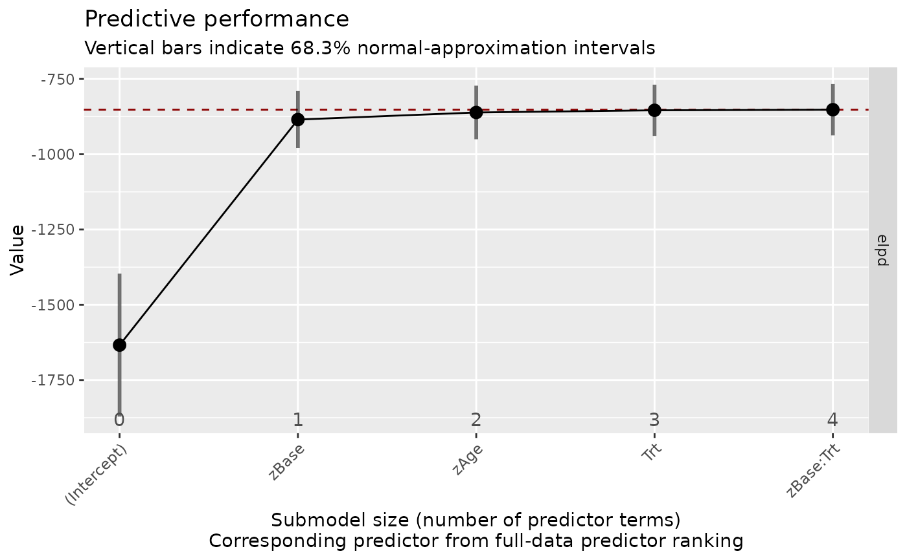
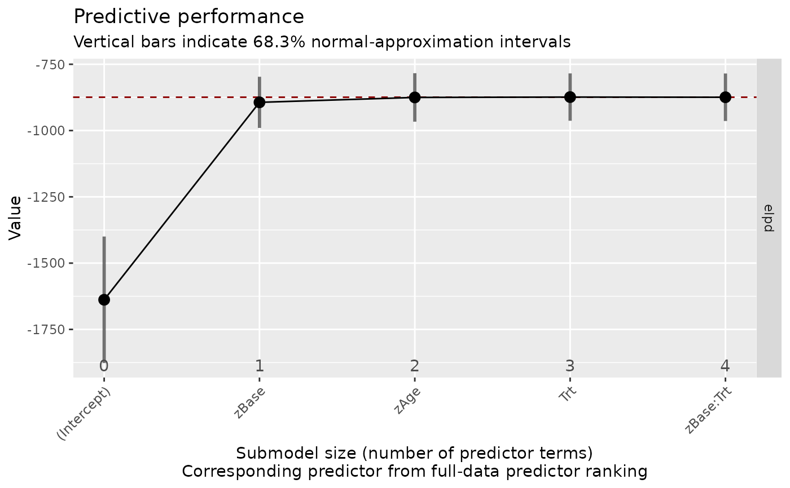

Projection Predictive Variable Selection: Get Reference Model
Source:R/projpred.R
get_refmodel.brmsfit.RdThe get_refmodel.brmsfit method can be used to create the reference
model structure which is needed by the projpred package for performing
a projection predictive variable selection. This method is called
automatically when performing variable selection via
varsel or
cv_varsel, so you will rarely need to call
it manually yourself.
Usage
get_refmodel.brmsfit(
object,
newdata = NULL,
resp = NULL,
cvfun = NULL,
dis = NULL,
latent = FALSE,
brms_seed = NULL,
...
)Arguments
- object
An object of class
brmsfit.- newdata
An optional data.frame for which to evaluate predictions. If
NULL(default), the original data of the model is used.NAvalues within factors (excluding grouping variables) are interpreted as if all dummy variables of this factor are zero. This allows, for instance, to make predictions of the grand mean when using sum coding.NAvalues within grouping variables are treated as a new level.- resp
Optional names of response variables. If specified, predictions are performed only for the specified response variables.
- cvfun
Optional cross-validation function (see
get_refmodelfor details). IfNULL(the default),cvfunis defined internally based onkfold.brmsfit.- dis
Passed to argument
disofinit_refmodel, but leave this atNULLunless projpred complains about it.- latent
See argument
latentofextend_family. Setting this toTRUErequires a projpred version >= 2.4.0.- brms_seed
A seed used to infer seeds for
kfold.brmsfitand for sampling group-level effects for new levels (in multilevel models). IfNULL, thenset.seedis not called at all. If notNULL, then the pseudorandom number generator (PRNG) state is reset (to the state before calling this function) upon exiting this function.- ...
Further arguments passed to
init_refmodel.
Details
The extract_model_data function used internally by
get_refmodel.brmsfit ignores arguments wrhs and orhs
(a warning is thrown if these are non-NULL). For example, arguments
weightsnew and offsetnew of
proj_linpred,
proj_predict, and
predict.refmodel are passed to
wrhs and orhs, respectively.
Examples
# \dontrun{
# fit a simple model
fit <- brm(count ~ zAge + zBase * Trt,
data = epilepsy, family = poisson())
#> Compiling Stan program...
#> Start sampling
#>
#> SAMPLING FOR MODEL 'anon_model' NOW (CHAIN 1).
#> Chain 1:
#> Chain 1: Gradient evaluation took 1.7e-05 seconds
#> Chain 1: 1000 transitions using 10 leapfrog steps per transition would take 0.17 seconds.
#> Chain 1: Adjust your expectations accordingly!
#> Chain 1:
#> Chain 1:
#> Chain 1: Iteration: 1 / 2000 [ 0%] (Warmup)
#> Chain 1: Iteration: 200 / 2000 [ 10%] (Warmup)
#> Chain 1: Iteration: 400 / 2000 [ 20%] (Warmup)
#> Chain 1: Iteration: 600 / 2000 [ 30%] (Warmup)
#> Chain 1: Iteration: 800 / 2000 [ 40%] (Warmup)
#> Chain 1: Iteration: 1000 / 2000 [ 50%] (Warmup)
#> Chain 1: Iteration: 1001 / 2000 [ 50%] (Sampling)
#> Chain 1: Iteration: 1200 / 2000 [ 60%] (Sampling)
#> Chain 1: Iteration: 1400 / 2000 [ 70%] (Sampling)
#> Chain 1: Iteration: 1600 / 2000 [ 80%] (Sampling)
#> Chain 1: Iteration: 1800 / 2000 [ 90%] (Sampling)
#> Chain 1: Iteration: 2000 / 2000 [100%] (Sampling)
#> Chain 1:
#> Chain 1: Elapsed Time: 0.102 seconds (Warm-up)
#> Chain 1: 0.095 seconds (Sampling)
#> Chain 1: 0.197 seconds (Total)
#> Chain 1:
#>
#> SAMPLING FOR MODEL 'anon_model' NOW (CHAIN 2).
#> Chain 2:
#> Chain 2: Gradient evaluation took 1e-05 seconds
#> Chain 2: 1000 transitions using 10 leapfrog steps per transition would take 0.1 seconds.
#> Chain 2: Adjust your expectations accordingly!
#> Chain 2:
#> Chain 2:
#> Chain 2: Iteration: 1 / 2000 [ 0%] (Warmup)
#> Chain 2: Iteration: 200 / 2000 [ 10%] (Warmup)
#> Chain 2: Iteration: 400 / 2000 [ 20%] (Warmup)
#> Chain 2: Iteration: 600 / 2000 [ 30%] (Warmup)
#> Chain 2: Iteration: 800 / 2000 [ 40%] (Warmup)
#> Chain 2: Iteration: 1000 / 2000 [ 50%] (Warmup)
#> Chain 2: Iteration: 1001 / 2000 [ 50%] (Sampling)
#> Chain 2: Iteration: 1200 / 2000 [ 60%] (Sampling)
#> Chain 2: Iteration: 1400 / 2000 [ 70%] (Sampling)
#> Chain 2: Iteration: 1600 / 2000 [ 80%] (Sampling)
#> Chain 2: Iteration: 1800 / 2000 [ 90%] (Sampling)
#> Chain 2: Iteration: 2000 / 2000 [100%] (Sampling)
#> Chain 2:
#> Chain 2: Elapsed Time: 0.111 seconds (Warm-up)
#> Chain 2: 0.112 seconds (Sampling)
#> Chain 2: 0.223 seconds (Total)
#> Chain 2:
#>
#> SAMPLING FOR MODEL 'anon_model' NOW (CHAIN 3).
#> Chain 3:
#> Chain 3: Gradient evaluation took 4.1e-05 seconds
#> Chain 3: 1000 transitions using 10 leapfrog steps per transition would take 0.41 seconds.
#> Chain 3: Adjust your expectations accordingly!
#> Chain 3:
#> Chain 3:
#> Chain 3: Iteration: 1 / 2000 [ 0%] (Warmup)
#> Chain 3: Iteration: 200 / 2000 [ 10%] (Warmup)
#> Chain 3: Iteration: 400 / 2000 [ 20%] (Warmup)
#> Chain 3: Iteration: 600 / 2000 [ 30%] (Warmup)
#> Chain 3: Iteration: 800 / 2000 [ 40%] (Warmup)
#> Chain 3: Iteration: 1000 / 2000 [ 50%] (Warmup)
#> Chain 3: Iteration: 1001 / 2000 [ 50%] (Sampling)
#> Chain 3: Iteration: 1200 / 2000 [ 60%] (Sampling)
#> Chain 3: Iteration: 1400 / 2000 [ 70%] (Sampling)
#> Chain 3: Iteration: 1600 / 2000 [ 80%] (Sampling)
#> Chain 3: Iteration: 1800 / 2000 [ 90%] (Sampling)
#> Chain 3: Iteration: 2000 / 2000 [100%] (Sampling)
#> Chain 3:
#> Chain 3: Elapsed Time: 0.101 seconds (Warm-up)
#> Chain 3: 0.105 seconds (Sampling)
#> Chain 3: 0.206 seconds (Total)
#> Chain 3:
#>
#> SAMPLING FOR MODEL 'anon_model' NOW (CHAIN 4).
#> Chain 4:
#> Chain 4: Gradient evaluation took 1e-05 seconds
#> Chain 4: 1000 transitions using 10 leapfrog steps per transition would take 0.1 seconds.
#> Chain 4: Adjust your expectations accordingly!
#> Chain 4:
#> Chain 4:
#> Chain 4: Iteration: 1 / 2000 [ 0%] (Warmup)
#> Chain 4: Iteration: 200 / 2000 [ 10%] (Warmup)
#> Chain 4: Iteration: 400 / 2000 [ 20%] (Warmup)
#> Chain 4: Iteration: 600 / 2000 [ 30%] (Warmup)
#> Chain 4: Iteration: 800 / 2000 [ 40%] (Warmup)
#> Chain 4: Iteration: 1000 / 2000 [ 50%] (Warmup)
#> Chain 4: Iteration: 1001 / 2000 [ 50%] (Sampling)
#> Chain 4: Iteration: 1200 / 2000 [ 60%] (Sampling)
#> Chain 4: Iteration: 1400 / 2000 [ 70%] (Sampling)
#> Chain 4: Iteration: 1600 / 2000 [ 80%] (Sampling)
#> Chain 4: Iteration: 1800 / 2000 [ 90%] (Sampling)
#> Chain 4: Iteration: 2000 / 2000 [100%] (Sampling)
#> Chain 4:
#> Chain 4: Elapsed Time: 0.105 seconds (Warm-up)
#> Chain 4: 0.099 seconds (Sampling)
#> Chain 4: 0.204 seconds (Total)
#> Chain 4:
summary(fit)
#> Family: poisson
#> Links: mu = log
#> Formula: count ~ zAge + zBase * Trt
#> Data: epilepsy (Number of observations: 236)
#> Draws: 4 chains, each with iter = 2000; warmup = 1000; thin = 1;
#> total post-warmup draws = 4000
#>
#> Regression Coefficients:
#> Estimate Est.Error l-95% CI u-95% CI Rhat Bulk_ESS Tail_ESS
#> Intercept 1.94 0.04 1.87 2.01 1.00 3010 3251
#> zAge 0.15 0.03 0.10 0.20 1.00 3024 2299
#> zBase 0.57 0.02 0.52 0.62 1.00 2349 2345
#> Trt1 -0.20 0.05 -0.30 -0.09 1.00 2836 2733
#> zBase:Trt1 0.05 0.03 -0.01 0.10 1.00 2416 2224
#>
#> Draws were sampled using sampling(NUTS). For each parameter, Bulk_ESS
#> and Tail_ESS are effective sample size measures, and Rhat is the potential
#> scale reduction factor on split chains (at convergence, Rhat = 1).
# The following code requires the 'projpred' package to be installed:
library(projpred)
#> This is projpred version 2.10.0.
#>
#> Attaching package: ‘projpred’
#> The following object is masked from ‘package:brms’:
#>
#> do_call
# perform variable selection without cross-validation
vs <- varsel(fit)
summary(vs)
#>
#> Family: poisson
#> Link function: log
#>
#> Formula: count ~ zAge + zBase + Trt + zBase:Trt
#> Observations: 236
#> Projection method: traditional
#> Search method: forward
#> Maximum submodel size for the search: 4
#> Number of projected draws in the search: 20 (from clustered projection)
#> Number of projected draws in the performance evaluation: 400
#> Argument `refit_prj`: TRUE
#>
#> Submodel performance evaluation summary with `deltas = FALSE` and `cumulate = FALSE`:
#> size ranking_fulldata cv_proportions_diag elpd elpd.se elpd.diff elpd.diff.se
#> 0 (Intercept) NA -1634 237 -781.713 213.0
#> 1 zBase NA -885 95 -32.733 19.9
#> 2 zAge NA -861 89 -9.184 8.4
#> 3 Trt NA -854 85 -1.934 2.9
#> 4 zBase:Trt NA -852 85 0.067 0.2
#>
#> Reference model performance evaluation summary with `deltas = FALSE`:
#> elpd elpd.se
#> -852 85
plot(vs)

# perform variable selection with cross-validation
cv_vs <- cv_varsel(fit)
summary(cv_vs)
#>
#> Family: poisson
#> Link function: log
#>
#> Formula: count ~ zAge + zBase + Trt + zBase:Trt
#> Observations: 236
#> Projection method: traditional
#> CV method: PSIS-LOO CV with search included (i.e., fold-wise searches)
#> Search method: forward
#> Maximum submodel size for the search: 4
#> Number of projected draws in the search: 20 (from clustered projection)
#> Number of projected draws in the performance evaluation: 400
#> Argument `refit_prj`: TRUE
#>
#> Submodel performance evaluation summary with `deltas = FALSE` and `cumulate = FALSE`:
#> size ranking_fulldata cv_proportions_diag elpd elpd.se elpd.diff elpd.diff.se
#> 0 (Intercept) NA -1638 239 -763.99 211.36
#> 1 zBase 1 -894 96 -19.36 18.22
#> 2 zAge 1 -875 91 -0.86 7.55
#> 3 Trt 1 -874 89 0.49 2.78
#> 4 zBase:Trt 1 -874 90 -0.15 0.23
#>
#> Reference model performance evaluation summary with `deltas = FALSE`:
#> elpd elpd.se
#> -874 90
plot(cv_vs)

# }